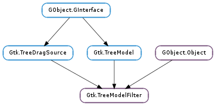

| clear_cache() | |
| convert_child_iter_to_iter(child_iter) | |
| convert_child_path_to_path(child_path) | |
| convert_iter_to_child_iter(filter_iter) | |
| convert_path_to_child_path(filter_path) | |
| get_model() | |
| refilter() | |
| set_modify_func(types, func, *data) | |
| set_value(iter, column, value) | |
| set_visible_column(column) | |
| set_visible_func(func[, data]) |
| Name | Type | Flags | Description |
|---|---|---|---|
| child-model | Gtk.TreeModel | r/w/c | The model for the filtermodel to filter |
| virtual-root | Gtk.TreePath | r/w/c | The virtual root (relative to the child model) for this filtermodel |
None
| Name | Type | Access |
|---|---|---|
| parent | GObject.Object | r |
Bases: GObject.Object, Gtk.TreeDragSource, Gtk.TreeModel
A Gtk.TreeModelFilter is a tree model which wraps another tree model, and can do the following things:
The basic API is similar to Gtk.TreeModelSort. For an example on its usage, see the section on Gtk.TreeModelSort.
When using Gtk.TreeModelFilter, it is important to realize that Gtk.TreeModelFilter maintains an internal cache of all nodes which are visible in its clients. The cache is likely to be a subtree of the tree exposed by the child model. Gtk.TreeModelFilter will not cache the entire child model when unnecessary to not compromise the caching mechanism that is exposed by the reference counting scheme. If the child model implements reference counting, unnecessary signals may not be emitted because of reference counting rule 3, see the Gtk.TreeModel documentation. (Note that e.g. Gtk.TreeStore does not implement reference counting and will always emit all signals, even when the receiving node is not visible).
Because of this, limitations for possible visible functions do apply. In general, visible functions should only use data or properties from the node for which the visibility state must be determined, its siblings or its parents. Usually, having a dependency on the state of any child node is not possible, unless references are taken on these explicitly. When no such reference exists, no signals may be received for these child nodes (see reference couting rule number 3 in the Gtk.TreeModel section).
Determining the visibility state of a given node based on the state of its child nodes is a frequently occurring use case. Therefore, Gtk.TreeModelFilter explicitly supports this. For example, when a node does not have any children, you might not want the node to be visible. As soon as the first row is added to the node’s child level (or the last row removed), the node’s visibility should be updated.
This introduces a dependency from the node on its child nodes. In order to accommodate this, Gtk.TreeModelFilter must make sure the necesary signals are received from the child model. This is achieved by building, for all nodes which are exposed as visible nodes to Gtk.TreeModelFilter ‘s clients, the child level (if any) and take a reference on the first node in this level. Furthermore, for every row-inserted, row-changed or row-deleted signal (also these which were not handled because the node was not cached), Gtk.TreeModelFilter will check if the visibility state of any parent node has changed.
Beware, however, that this explicit support is limited to these two cases. For example, if you want a node to be visible only if two nodes in a child’s child level (2 levels deeper) are visible, you are on your own. In this case, either rely on Gtk.TreeStore to emit all signals because it does not implement reference counting, or for models that do implement reference counting, obtain references on these child levels yourself.
This function should almost never be called. It clears the filter of any cached iterators that haven’t been reffed with Gtk.TreeModel.ref_node (). This might be useful if the child model being filtered is static (and doesn’t change often) and there has been a lot of unreffed access to nodes. As a side effect of this function, all unreffed iters will be invalid.
| Parameters: | child_iter (Gtk.TreeIter) – A valid Gtk.TreeIter pointing to a row on the child model. |
|---|---|
| Returns: | True, if filter_iter was set, i.e. if child_iter is a valid iterator pointing to a visible row in child model. |
| Return type: | bool, filter_iter: Gtk.TreeIter |
Sets filter_iter to point to the row in filter that corresponds to the row pointed at by child_iter. If filter_iter was not set, False is returned.
| Parameters: | child_path (Gtk.TreePath) – A Gtk.TreePath to convert. |
|---|---|
| Returns: | A newly allocated Gtk.TreePath, or None. |
| Return type: | Gtk.TreePath |
Converts child_path to a path relative to filter. That is, child_path points to a path in the child model. The rerturned path will point to the same row in the filtered model. If child_path isn’t a valid path on the child model or points to a row which is not visible in filter, then None is returned.
| Parameters: | filter_iter (Gtk.TreeIter) – A valid Gtk.TreeIter pointing to a row on filter. |
|---|---|
| Return type: | child_iter: Gtk.TreeIter |
Sets child_iter to point to the row pointed to by filter_iter.
| Parameters: | filter_path (Gtk.TreePath) – A Gtk.TreePath to convert. |
|---|---|
| Returns: | A newly allocated Gtk.TreePath, or None. |
| Return type: | Gtk.TreePath |
Converts filter_path to a path on the child model of filter. That is, filter_path points to a location in filter. The returned path will point to the same location in the model not being filtered. If filter_path does not point to a location in the child model, None is returned.
| Returns: | A pointer to a Gtk.TreeModel. |
|---|---|
| Return type: | Gtk.TreeModel |
Returns a pointer to the child model of filter.
Emits ::row-changed for each row in the child model, which causes the filter to re-evaluate whether a row is visible or not.
| Parameters: |
|
|---|
With the n_columns and types parameters, you give an array of column types for this model (which will be exposed to the parent model/view). The func, data and destroy parameters are for specifying the modify function. The modify function will get called for each data access, the goal of the modify function is to return the data which should be displayed at the location specified using the parameters of the modify function.
| Parameters: | column (int) – A int which is the column containing the visible information. |
|---|
Sets column of the child_model to be the column where filter should look for visibility information. columns should be a column of type GObject.TYPE_BOOLEAN, where True means that a row is visible, and False if not.
| Parameters: |
|
|---|
Sets the visible function used when filtering the filter to be func. The function should return True if the given row should be visible and False otherwise.
If the condition calculated by the function changes over time (e.g. because it depends on some global parameters), you must call Gtk.TreeModelFilter.refilter () to keep the visibility information of the model uptodate.
Note that func is called whenever a row is inserted, when it may still be empty. The visible function should therefore take special care of empty rows, like in the example below.
static gboolean
visible_func (GtkTreeModel *model,
GtkTreeIter *iter,
gpointer data)
{
/&ast Visible if row is non-empty and first column is "HI" &ast/
gchar *str;
gboolean visible = FALSE;
gtk_tree_model_get (model, iter, 0, &str, -1);
if (str && strcmp (str, "HI") == 0)
visible = TRUE;
g_free (str);
return visible;
}